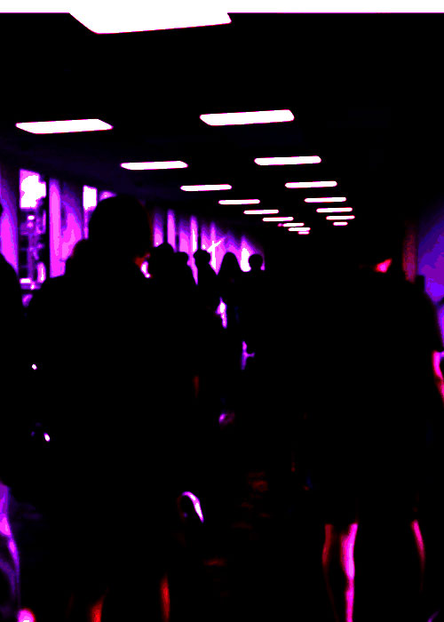

In the second image, we see the continuation of the past to get to the future. People must move constantly; if you stop, you get behind and might lose your head in the chaos. Does this rhythm of life make us zombies? We wake up, eat, work, study, sleep, and repeat. If you stop doing that, you must figure out something that outshines all those. So we are constantly moving, and our future is shaped by it. And while looking at the image, we can always use our interpretation to see what we want to see.
